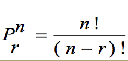
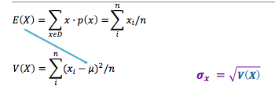

Probabilidad de frecuencia
P(A) = n/N
n= número de elementos del evento A
N= número de elementos de la muestra o población
//para calcular frecuencia es necesario pasar la función
frequency(a,n)
//Dondé a es el array de posibles elementos
// y n el elemento del que se quiere conocer la frequencia
Factorial: Producto de todos los numeros positivos desde 1…n
Donde x es el numero que se quiere factorizar
//Para llamar esta funcion es necesario
getFactorial(x);
//dondé x es el numero a factorizar
Probability: given a list of elements, what’s the probability of a certain event happening
Takes a list of elements and n = the number you want to find the probability
getProbability(arr, n)
Permutaciones: Número de formas para seleccionar r de n elementos cuando el orden es importante

//para llamar esta funcioón es necesario llamar
getPermutations(n,r);
//dondé n es el universo y r son los elementos a seleccionar
Combinaciones: Número de formas para seleccionar r de n elementos cuando el orden no es importante

//para llamar esta funcioón es necesario llamar
getCombinations(n,r);
//dondé n es el universo y r son los elementos a seleccionar
Funciones de densidad de probabilidad
Media varianza y disviación estándar
Varianza, media, desviación estandar:
Todos reciben una lista de elementos
//Media
getMean(list)
//Varianza
getVariance(list)
//Desviación estandar
getStandardDeviation(list)

Poisson distribution
To call a poisson distribution you will need:
poisssonDistribution(a, t, limI, limS)
poisssonDistributionLambda(lambda, limI, limS)
Exponential distribution
exponentialdistribution([list], limSuperior, limInferior)
function exponentialDistribuiton(list, limS, limI) {
let lamb = 1 / getMean(list);
let low= (-1*lamb*limI);
let high= (-1*lamb*limS);
if (limS< 1) {
dist = Math.pow(Math.E, high)
}
else {
dist = (1 - Math.pow(Math.E, high)) - (1 - Math.pow(Math.E, low))
}
console.log("lambda:" + lamb);
return dist;
}